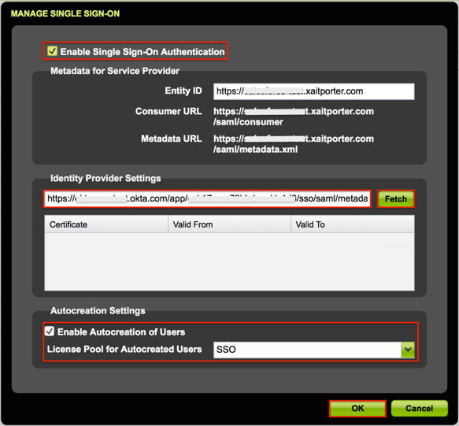
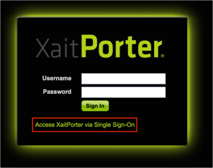

Notify XaitPorter that you would like to start using Single Sign-On functionality. XaitPorter will notify you when can start your setup and testing. Once notified, follow the instructions below:
Login to XaitPorter as an administrator.
Navigate to Admin > System Setup > Manage Single Sign-On.
On the Manage Single Sign-On page:
Check the Enable Single Sign-On Authentication box.
Metadata URL: Copy and paste the following:
Sign into the Okta Admin dashboard to generate this value.
Click Fetch.
Optional: Under Autocreation Settings check the Enable Autocreation of Users box and set the License Pool for Autocreated Users.
Click Save.

Done!
Notes:
SP-initiated flows and Just In Time (JIT) provisioning are supported.
IDP-initiated flows are not supported.
FLOW A
Open your XaitPorter Base url: https://[yourSubdomain].xaitporter.com/.
FLOW B
Open the Login URL for the local accounts: https://[yourSubdomain].xaitporter.com/session/login.
Click the Access XaitPorter via Single Sign-On link.
